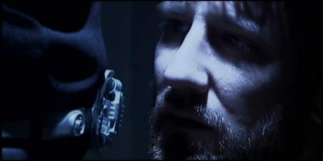
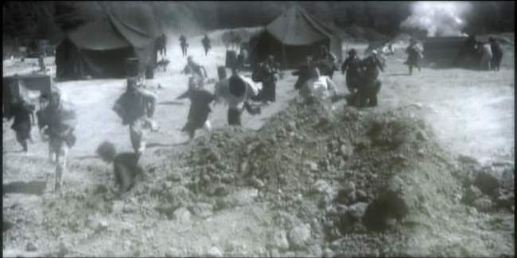
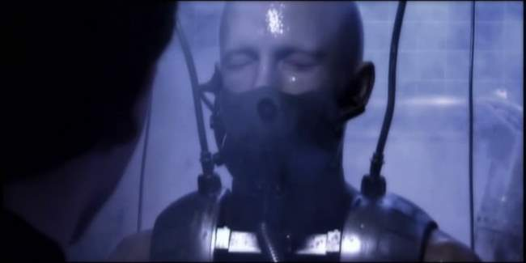
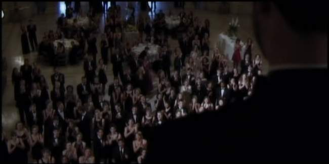
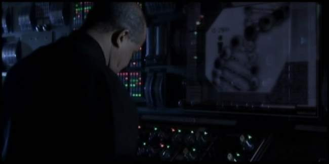
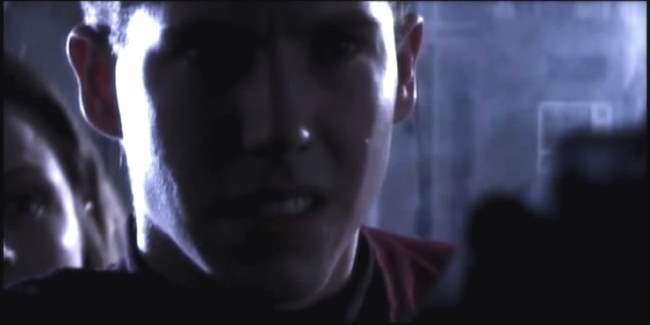
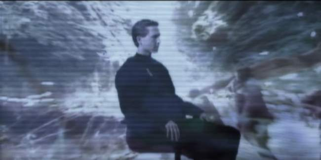
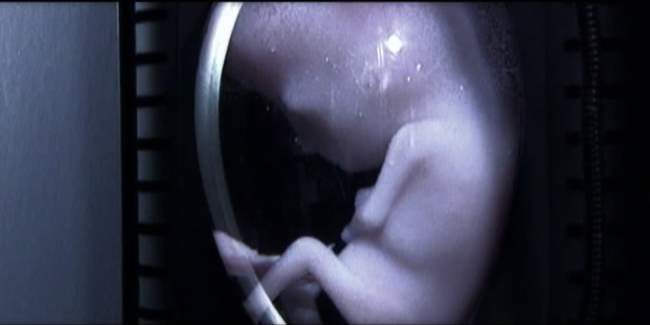

Movie review by : SFAM
Year : 2005
Directed by : Jason Tomaric
Written by : Jason Tomaric
Degree of Cyberpunk visuals : Medium
Correlation to Cyberpunk themes : High
Rating : 5/10
Key cast members :

Overview: There have been some truly interesting projects in the no-budget Sci-Fi indie movie business. One of the most impressive is Jason Tomaric's Cl.One. Made for a budget of only 25,000, Tomaric tapped into the power of mass collaboration to solicit help from half the city of Cleveland, Ohio. While I might have a number of issues with the movie itself, nobody viewing the effects and look of Cl.One would ever think they were produced on a shoestring. In short, the Tomaric was able to pull together a far more professional looking movie based on personality alone. In a Wired article, Tomaric guestimates that he received somewhere between 1.7 to 2 million in free goods and services. The tagline for this movie is "3,000 extras. 48 locations. 650 digital effects.... Made by one kid out of his parents' basement." Count me as impressed!

The Story: Due to a horrible nuclear world war, the last vestiges of humanity can no longer procreate. The damage caused by radiation has genetically mutated the remaining inhabitants. So now, humanity exists in pockets of globed cities that are administered in a surveillance-type society mode. The cities are connected via a series of high?speed tunnel trains. The hope is that genetic research and cloning will offer a continuation of the species. Unfortunately, an anti-government resistance movement called Spectrum has also arisen.

Unfortunately, cloning seems to yield fully formed, but soul-less, mindless humans. In essence they are empty shells. To transform these clones into living beings, it is hypothesized that a human will be found who's DNA has not been irradiated, and who's genetic sequence will be an exact match needed to give life the clones. In doing so, humanity's future will be restored.

Chancellor Derek Strombourg, the head New Athens who is beset by the loss of his only child who died due to radiation damage, has created a school of the best and brightest. But this is just a front for his real goal ? to test all students with the hopes of finding the "one" ? the one with the genetic match necessary to bring the dormant clones to life. After four years of searching, he finally has a match - Student Orin Stalward. To make this work, he has to initiate the experiment right at the moment that Stalward is planning on taking his own life. To make matters worse, Spectrum, the anti-government "terrorist" organization headed up by Joshua Adams is causing significant problems to Strombourg's leadership, both in its attacks and in its intrusion into Orin's life.

The Pacing and Story Issues: From a pacing standpoint, Cl.One starts off with an impressive "bang" and goes downhill from there. Cl.One is at best a very complicated story. I consider myself fairly astute at this point in picking up various cyberpunk themes and storylines, but still found that it took me two or three viewings just to get the jist of Cl.One's basic plot (this is different from say, taking two or three viewings to "figure out the meaning" of movies like Oshii's Avalon for instance). Adding to this is the relatively meandering pacing, where most of the story complications are narrated. If you aren't awake enough to catch and assimilate a myriad of facts in seemingly innocuous dialogue moments, you'll miss the meaning of the later scenes. In totality, the project doesn't come together. There are a lot of interesting themes and ideas, but the execution falls short. Had they done this over, my suggestion would be to transform more story points into active story points versus narrating or orating them over a the first third of the movie. Even more problematic is the change in actor focus near the end of the movie ? the "exciting mindfuck twist" finish at the end is always cool, but the change of context really muddies the overall experience.

The Acting: The acting in Cl.One is certainly nothing to write home about. Jeff St. Clair as Derek Strombourg is really the only one who delivers a consistent performance. That said, there are very few clunkers either. Nobody truly embarrass themselves, and you never really get the feeling you're watching a cheesefest trainwreck. While this isn't exactly a ringing endorsement, keep in mind that this cast is almost comprised completely of amateurs. Not even the director had any experience prior to this shoot. While there were few clunkers, there was also distinct lack of emotional "umph" that really detracted from the overall experience. The stilted, uneven dialogue dialogue contributes to this in that it really doesn't give the cast much to work with. Everyone was playing their parts but the performances as a whole came off as flat, which reflected poorly on an already slow-paced flick.

The FX: One of the best ways to cut corners on low-to-no budget science fiction projects is the selection of interesting locations. Cl.One excels in transforming seemingly ordinary locations into cool science-fiction settings. In all, fourty-eight Cleveland locations where used, including a nuclear power plant, a jail and Nasa locations. But perhaps the most interesting was the laboratory, which was created in a beer brewery. While one or two of the FX scenes look cheap (primarily the train sequence), the majority of the CG used in this Cl.One worked wonderfully. The FX and overall production values were generally what you would expect from a professional film, not a no-budget indie flick. Cl.One creates a look similar to Sky Captain and the World of Tomorrow, in that the entire film has been sent through digitized color filtering. While the overall look was professional, it served to drab-down the picture, which didn't work well when combined with flat acting and slow pacing.

Blank Clone Bodies? One of the "take on faith" science points that Cl.One asks the viewer to swallow is the idea that they can make cloned bodies which are "blank" ? meaning they have no soul, no memories and no personalities. The big challenge involves figuring out how to make these blank bodies get magically filled by finding the right matching genetic sequence to give life to a thousand frozen embryos. . All sorts of questions that might go through your head are all bypassed ? why can't the way that cloning today works still work in the future? Also, if they have all this expertise at genetic engineering to the point that they "know" the match they need, why can't they modify the genetic code prior to uploading? Even more problematic, if they are transferring DNA sequences, why does the state of the person whom the DNA is from matter (Orin needed to be suicidal for his thoughts to not transfer to the clones)? You can ask those questions if you buy-in to the idea that clones can be made without souls or thinking, etc. This is an extreme version of the blank-slate approach, one which is nonsensical on its face, and one which they provide absolutely no rationale for in the narrative.
The Bottom Line: Cl.One has some terrific things going for it, but in the end, I like the background story of its production far more than I like the movie itself. Truly, I absolutely loved the "making of" featurette. That large segments of Cleveland pitched in for free to make this movie is a crowing achievement, one which should be celebrated. In orchestrating this dynamic, Jason Tomaric shows himself to be a true film making talent. And while the lighting and production values are high quality, the movie itself just doesn't come together. The score is way too emotional and dominating when matched with the scenes, the actor performances and dialogue. The story doesn't hold together, and the "twist" near the end makes you seriously question the character focus choices throughout the movie. On a positive note, the lighting and visuals were consistently interesting. Because of this and the background of the production, I would recommend Cl.One to anyone interesting in indie Sci-Fi flicks.